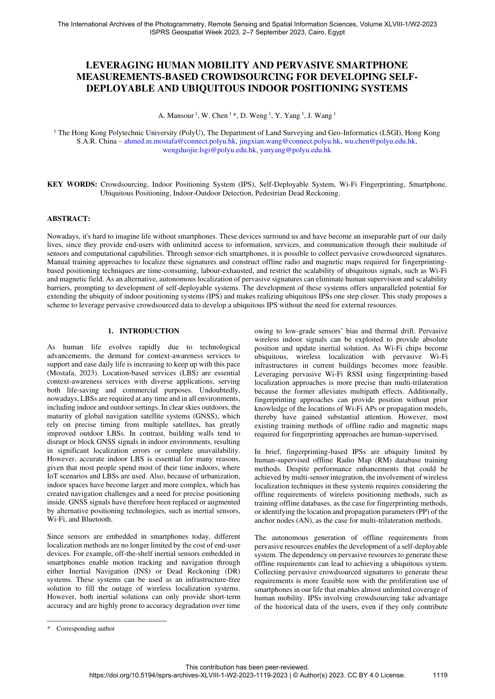

Leveraging human mobility and pervasive smartphone measurements-based crowdsourcing for developing self-deployable and ubiquitous indoor positioning systems
Paper preview

Research story and quick reading guide
This paper focuses on one of the most persistent barriers in IPS: the dependence on manually collected offline data. Fingerprinting systems usually need radio and magnetic maps before they can localize users. Creating these maps through manual surveys is slow, expensive, and difficult to repeat when the building changes. The paper reframes this problem by asking whether ordinary human mobility, observed through pervasive smartphone measurements, can become a source for developing self-deployable IPS.
The central concept is that people naturally walk through indoor spaces every day. Their smartphones observe Wi-Fi, magnetic field, inertial motion, and other sensing cues while they move. If these measurements can be organized and localized with sufficient reliability, they can reduce the need for expert surveyors. The paper therefore connects daily mobility with radio-map generation. It treats user movement not only as a navigation behavior but also as a data-collection process that can support IPS deployment.
The research story is people move → phones sense → signatures accumulate → maps emerge → IPS scales. This visual chain is useful because it shows how the deployment burden can shift from planned surveying to opportunistic data accumulation. However, the paper also recognizes that this is not trivial. Crowdsourced data are irregular, noisy, weakly labeled, and affected by device diversity and user behavior. A self-deployable IPS must therefore include mechanisms for data qualification, trajectory interpretation, and measurement integration.
The value of the paper lies in its deployment-oriented framing. Rather than presenting crowdsourcing as a generic data source, it explains why pervasive smartphone measurements can support an autonomous indoor positioning ecosystem. This connects to later work on crowd-powered IPS, autonomous radio-map generation, user-centric challenges, and lifecycle-oriented map maintenance. The paper is especially useful for understanding the early bridge between sensing availability and scalable positioning infrastructure.
For readers, the paper provides a clear conceptual map of how smartphone crowdsourcing can reduce reliance on external sources. It shows that human mobility is not just a movement pattern to be localized; it is also an engine for map construction. This makes the work highly relevant to studies that seek to develop IPS without dense manual calibration, external anchors, or continuous expert intervention.
This paper should be cited when discussing self-deployable IPS, pervasive smartphone crowdsourcing, human-mobility-assisted radio-map generation, Wi-Fi fingerprinting scalability, and systems that aim to transform naturally collected user measurements into operational indoor positioning infrastructure.
Extended summary
This paper presents a crowdsourcing scheme that uses human mobility and pervasive smartphone measurements to support self-deployable, ubiquitous IPS without relying on manually surveyed radio maps.
When to cite this paper
- human mobility is used for crowdsourced indoor radio map construction
- self-deployable IPS frameworks are introduced
- smartphone measurements support ubiquitous indoor positioning
- indoor-outdoor detection is linked to radio map generation
Keywords
crowdsourcingindoor positioning systemself-deployable systemWi-Fi fingerprintingsmartphoneubiquitous positioningindoor-outdoor detectionPDR
Official link
https://doi.org/10.5194/isprs-archives-XLVIII-1-W2-2023-1119-2023
For publisher-restricted articles, link to the DOI or an allowed accepted manuscript rather than uploading a restricted PDF.
BibTeX
@inproceedings{Mansour2023leveraging,
title = {Leveraging human mobility and pervasive smartphone measurements-based crowdsourcing for developing self-deployable and ubiquitous indoor positioning systems},
author = {Ahmed Mansour and Wu Chen and Duojie Weng and Yang Yang and Jingxian Wang},
year = {2023},
journal = {ISPRS Archives},
doi = {10.5194/isprs-archives-XLVIII-1-W2-2023-1119-2023},
}